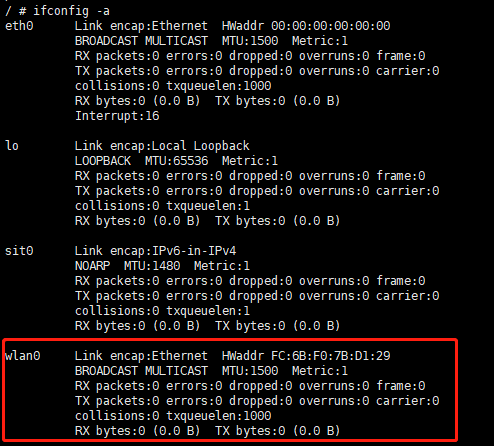
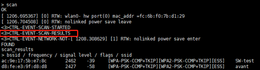

5. Wi-Fi基本操作¶
5.1. STA模式基本操作¶
5.1.1. 加载驱动¶
步骤 1. 载入驱动
需检查/mnt/system/ko/3rd下是否已具备下面的文件，根据所用模组加载不同ko:
[root@cvitek]/mnt/system/ko/3rd# ls 8188fu.ko 8189fs.ko
注意，由于wifi驱动并没有放在linux源码目录树中，所以无法build-in，只能编译成ko。
insmod /mnt/system/ko/3rd/8189fs.ko 或 insmod /mnt/system/ko/3rd/8188fu.ko
步骤2. 查看驱动是否载入成功
执行shell 指令：
ifconfig -a
若载入成功，可在执行shell指令后看到 wlan0网口

5.1.2. 启动Wi-Fi与连接AP¶
步骤1. 启动Wlan0网口
sc执行shell指令：
ifconfig wlan0 up
步骤2. 启动 wpa_supplication
执行 shell 指令：
echo "ctrl_interface=/var/run/wpa_supplicant" >/tmp/wpa_supplicant.conf wpa_supplicant -iwlan0 -Dnl80211 -c/tmp/wpa_supplicant.conf &
-iwlan0 表示使用wlan0接口
-Dnl80211 表示使用cfg80211接口
步骤3. 启动wpa_cli
执行shell指令：
wpa_cli -i wlan0
执行成功会出现 “>”提示符号

步骤4. 扫描附近AP
在 “>”提示符号后执行如下指令：
scan
在出现“CTRL-EVENT-SCAN-RESULTS”后, 再执行
scan_results
即可得到扫描结果

步骤 5. 连接AP
连接配置为WPA-PSK/WPA2-PSK认证与加密类型方式的AP
在“>”提示符号后执行如下指令，以取得网路ID （此示例中为0）：
add_network配置网路的SSID （此示例中的SSID为SW-test，由步骤4取得）
set_network 0 ssid “SW-test”配置网路加密方式与密码 (假设SW-test密码为012345678)
set_network 0 psk “012345678”启动网路
select_network 0观察是否有收到CTRL-EVENT-CONNECTED，若有，则表示连接成功。或可执行”status”指令，查询连线状态
输入“quit”退出wpa_cli, 执行shell指令如下以取得动态IP地址
udhcpc -b -i wlan0 -R &执行ping指令, 以观察网路是否正常运作, ex.
Ping 8.8.8.8
连接配置为open system的AP
步骤与配置为WPA-PSK/WPA2-PSK认证与加密类型方式相同，唯在配置网路加密方式需输入如下指令：
set_network 0 key_mgmt NONE
5.1.3. 关闭Wi-Fi与卸载驱动¶
步骤 1. 执行shell 指令如下：
ifconfig wlan0 down
步骤 2. 执行如下shell指令:
rmmod 8189fs.ko 或 rmmod 8188fu.ko
5.2. SoftAP模式基本操作¶
5.2.1. 加载驱动¶
载入驱动方式与STA模式相同，请参考章节 5.1.1.加载驱动
5.2.2. hostapd配置, udhcpd配置与启动SoftAP¶
启动SoftAP需先启动hostapd。与wpa_supplicant类似，hostpad可以用来配置AP端的各种认证协议，以及连接流程。
步骤1. 启动hostpad。执行shell命令
ifconfig wlan0 192.168.1.1 up hostapd /etc/network/hostapd.conf -B -i wlan0
步骤2. 启动udhcpd以分配动态IP给连接装置，执行shell 命令
udhcpd /etc/network/udhcpd.conf
备注：
可透过修改hostapd.conf来配置SoftAP的ssid, channel, 加密认证方式等，文档位置在SDK包里的/ramdisk/rootfs/overlay/{chip_name}/etc/network 或是平台上的/etc/network。例如可修改ssid以及wpa_passphrase来配置AP 名称以及登入密码
interface=wlan0 ctrl_interface=/var/run/hostapd ssid=CV184X_EVB channel=6 wpa=3 wpa_passphrase=012345678
其他参数意义可参考: http://manpages.ubuntu.com/manpages/bionic/man5/udhcpd.conf.5.html
可透过修改udhcpd.conf来配置SoftAP所分配的IP范围。udhcpd.conf文档位置在SDK包里的/ramdisk/rootfs/overlay/{chip_name}/etc/network 或是平台上的/etc/network。
# The start and end of the IP lease block start 192.168.1.10 #default: 192.168.0.20 end 192.168.1.254 #default: 192.168.0.254